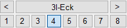

")
")
·Alternativer Aufruf: mittlere Maustaste auf eine Diagonale, Zeigerlinie oder einen Positionstext.
·Folienbelegung: Wenn AutFol eingestellt ist, werden die Elemente in Folie 6 abgelegt.
Anlegen und Bearbeiten statischer Positionskreise. Siehe auch: Positionskreise (Beschreibung, Verwendung)
Funktionen |
Beschreibung |
|---|---|
Positionskreis erzeugen. |
|
Positionskreis ändern. |
|
Positionskreis löschen. |
|
Positionskreis verschieben. |
|
Tabellentext anlegen. |
|
Positionstabelle anlegen oder aktualisieren. |
|
Positionsübersicht anzeigen und ausgeben. |
|
|
Positionskreisstil definieren. |
FRILO-Programm starten (F+L Statik Link). |
|
Position an VCmaster übergeben. |

Optionen |
Beschreibung |
|---|---|
|
Positionskreisstil-Auswahl für die Darstellung der statischen Positionen. |
|
Übernahme der Attribute eines Positionskreises (Linie, Text, Pfeilspitzenlänge). Siehe: Die "so wie"-Funktion |
 |
Formauswahl für die Positionierung. |
|
Ausrichtung der Spannrichtungs- und Zeigerlinien Or an: orthogonal bzw. parallel zu gedrehten Achsen. Or aus: unabhängig vom Winkel (Spannrichtungs- und Zeigerlinien). Or Win: rechtwinklig zur Richtung des Positionstextes. Kann ebenfalls mit gedrückter Umschalttaste (Shift) aktiviert werden. |
|
Darstellung der Spannrichtungs- und Zeigerlinien o.Pfei: ohne Pfeilspitze; Pfei.o: Pfeilspitze einseitig links Pfei.u: Pfeilspitze einseitig rechts; Pfei.b: mit Pfeilspitzen nach unten und oben. |
|
LgBel: beliebig lang. LgFest: mit konstanter Länge. Maßgebend ist die Länge der ersten Linie. |